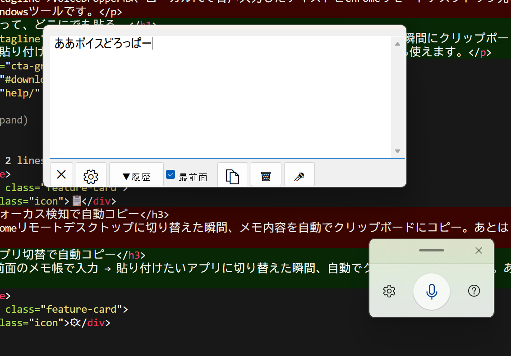

🎤
ワンクリック音声入力
マイクボタンを押すだけでWindows音声入力（Win+H）を起動。キーボードに触れずにテキストを入力できます。
常に最前面に浮かぶ小さなメモ帳に音声入力。アプリを切り替えた瞬間にクリップボードへ自動コピー。あとは Ctrl+V で貼り付けるだけ。Chromeリモートデスクトップはもちろん、どんなアプリにも使えます。

マイクボタンを押すだけでWindows音声入力（Win+H）を起動。キーボードに触れずにテキストを入力できます。
最前面のメモ帳で入力 → 貼り付けたいアプリに切り替えた瞬間、自動でクリップボードにコピー。あとは Ctrl+V するだけ。
自動コピーの対象ウィンドウを自由に選択可能。Chromeリモートデスクトップ以外のアプリにも対応できます。
コピー済みテキストを最大100件まで履歴に保持。ドロップダウンから選ぶだけで過去のメモを復元・再コピーできます。
どのアプリの上にも浮かぶ小さなウィンドウ。作業中いつでも音声入力の受け皿になります。タイトルバーレスで画面占有を最小限に。
単一ファイルで完結。インストーラー不要、レジストリ汚染なし。解凍してダブルクリックするだけ。
🎤ボタンを押して話すだけ。最前面に浮いているので、どんな作業中でもすぐ入力できます。
貼り付けたいアプリをクリック。その瞬間メモが自動でクリップボードにコピーされます。
どんなアプリでも Ctrl+V で完了。リモートデスクトップ、チャット、メール、エディタ、何でもOK。
VoiceDropperは藤田建具店の代表が個人で開発しています。このツールが役に立ったら、オンラインショップを覗いていただけると嬉しいです。木の温もりを感じるオリジナル製品を販売しています。
藤田建具店オンラインショップ